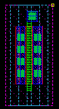
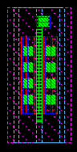
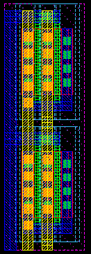
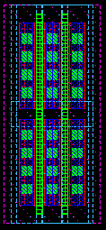

pfet style property
these layouts show the effect of varying the style property for an example pfet with 2 fingers
style = 2met - this is the default

style = 1met (1 finger only for this style)

style = 2met(RF)

style = unconnected
